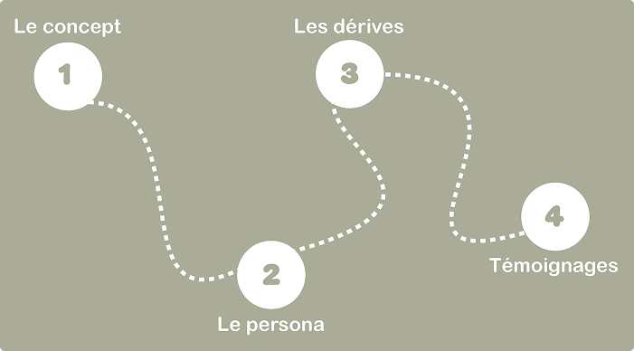
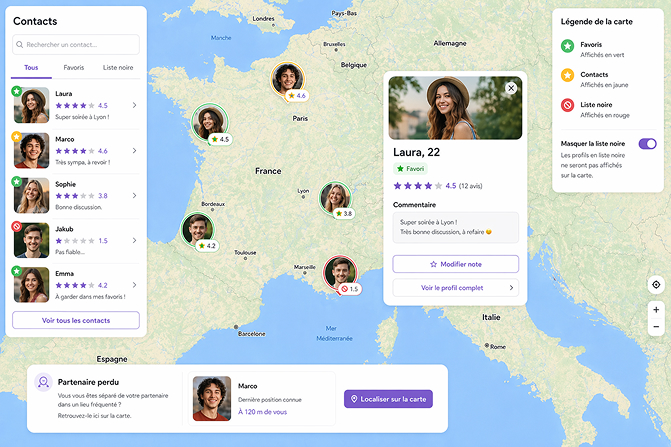
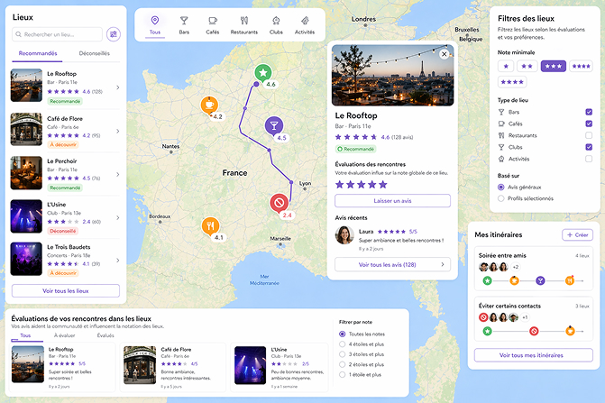
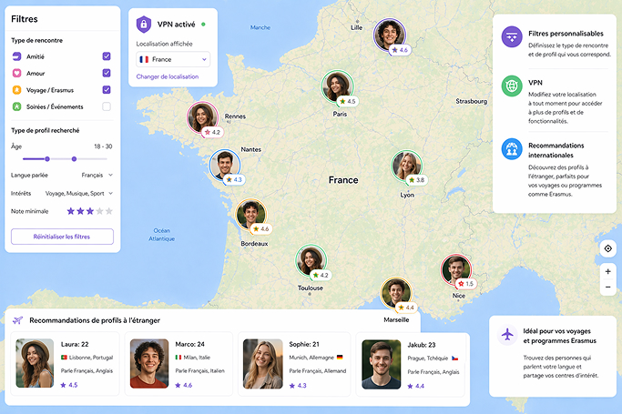

Ce voyage se fera en 4 étapes
La première étape d'un voyage
La première étape de notre voyage, dans laquelle vous vous trouvez, parlera surtout de ce qu’est Datting maps et de comment elle fonctionne. Dans la seconde partie, on décrira une journée type vécue par un utilisateur quotidien de l’extension, en passant par les dérives que peut engendrer Datting maps et en terminant par différents témoignages reçus de certains utilisateurs, en bien comme en mal.

C’est au terminus de ce voyage en 4 étapes que vous pourrez vous faire un avis simple et définitif sur le fait de savoir si Google a bien fait de créer cette extension ou si c’est le début de la fin d’un monde plus ou moins libre que nous avons connu jusque-là.
D'un GPS à des rencontres
Alors, qu'est ce que Datting maps ?
D’après mes recherches sur le sujet, j’ai pu apporter quelques explications. Tout d’abord, Datting maps n’est pas une application à part entière, c’est une extension ajoutée à Google Maps. Grâce au système de Google permettant de rechercher et de localiser des lieux sur sa carte, ils ont réussi à récupérer les profils Google de chaque utilisateur et à les localiser via leurs identifiants pour les afficher sur la map grâce à la géolocalisation.
Google promet que cette nouveauté permettra aux utilisateurs de voir les profils sur la map en continu, de filtrer le type de profils qu’ils souhaitent voir et, comme cité plus haut, l’entreprise promet également que cela favoriserait les rencontres entre différentes personnes afin d’améliorer le taux de sociabilité dans le monde, ce qui diminuerait le taux d’anxiété sociale que peuvent ressentir de nombreuses personnes timides.
Voilà les mots de Google sur ce qu’est Datting maps.
Ensuite, voyons plus en détail ce que permet de faire cette extension, afin de mieux comprendre les idées de Google derrière cette création.
Des fonctionalitées particulières
Gestion des profils et des interactions
Dans un premier temps, l’extension permet de laisser des commentaires sur les personnes rencontrées afin de garder une trace des interactions. Chaque profil reçoit aussi une note moyenne sur 5 étoiles basée sur l’ensemble des évaluations. Il est possible de classer les contacts en favoris ou en liste noire, chaque catégorie étant affichée sur la carte avec une couleur différente, avec l’option de masquer les profils en liste noire. Enfin, la fonctionnalité « partenaire perdu » permet de localiser un utilisateur sur la carte en cas de séparation dans un lieu fréquenté, afin de faciliter les retrouvailles.

Navigation, lieux et recommandation
Ensuite, l’accès à certains lieux publics liés à l’extension peut être autorisé ou refusé selon le nombre d’étoiles attribuées au profil. Ces lieux, définis comme points d’intérêt pour les rencontres, sont visibles sur la carte avec des recommandations basées sur les avis généraux ou les profils ciblés. Les utilisateurs peuvent créer des itinéraires personnalisés selon les contacts choisis, qu’ils souhaitent rencontrer ou éviter. Il est aussi possible d’évaluer les rencontres dans un lieu afin d’influencer sa note globale ; ces avis sont consultables dans une section dédiée et permettent de filtrer les lieux.

Personnalisation / paramètres avancés
Enfin, l’extension propose des filtres pour définir le type de rencontre et de profil recherché, modifiables à tout moment. L’utilisation d’un VPN permet de changer la localisation affichée, par exemple pour simuler une présence à l’étranger ou accéder à certaines fonctionnalités. Des recommandations de profils à l’étranger sont aussi proposées, notamment pour les voyages ou programmes comme Erasmus, afin de faciliter les échanges entre personnes parlant la même langue.

Première escale en vue
Et maintenant ?
Pour revenir sur tout ce que nous avons parcouru au long de cette étape, on peut voir que Google met l’accent sur la personnalisation des rencontres et des trajets que l’on peut réaliser. Ces fonctionnalités sont sûrement aidées par l’intelligence artificielle, mais cela reste un autre sujet.
En bref, avec Datting maps, Google cherche aussi, selon moi, à rendre Google Maps plus vivant et moins comme une simple application de GPS permettant d’aller d’un point A à un point B, en y intégrant des fonctionnalités plus sociales. Même s’il existait déjà des prémices de cela, notamment à travers la possibilité de noter et commenter des lieux, afin d’aider les utilisateurs à savoir à quoi s’attendre réellement grâce aux avis d’autres personnes.
En route vers la deuxième étape de notre voyage !
Rubrique suivante
L'utilisation